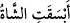
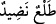

ifade ettiğinden dolayı bir şeyin bizzat kendisine izafe edilmemesi gerekçesiyle mevsuf
olan zer’ kelimesi hazfedilmiştir. Âyette geçen “hasîd”in kök anlamı “ekini biçmek”tir.
Burada “hasîd” “habbe (tane)” kelimesi dikkate alınarak mecâzen “mahsûd (biçilen
şey)” anlamında kullanılmıştır. Dolayısıyla âyetteki bu ifadenin anlamı “arpa ve buğday
gibi, rızık olmak üzere biçilen ürünlerden taneler…” olmaktadır. Burada bitki yerine
“dâne”nin zikredilmesi bizzat “dâne”nin maksud olmasından dolayıdır.
10. Kullara rızık olması için birbirine girmiş, küme küme tomurcukları olan uzun
boylu hurma ağaçları yetiştirdik.
Âyetteki “nahl” kelimesi “cennât” kelimesine atfedilmiştir. Zaten bahçelerde
bulunduğu hâlde tekrar hurma ağacının özel olarak zikredilmesi, diğer ağaçlara nazaran
fazîletini beyan etmek içindir. Yâsîn sûresinde hurma ağacının bazı özellikleri
belirtilmişti. Âyette cennât/bahçeler ile nahl/hurma ağacı arasında “habb/dâneler”
kelimesinin zikredilmesi, âyet sonlarının birbiriyle uyumlu olması hikmetinin yanı sıra
müstakil olarak bunların önemini ve özel bir hususiyeti hâiz olduklarını ifâde eder.
Âyetteki basikat kelimesi “semada uzayıp giden, yaratılışı muhteşem” demektir.
Bilindiği üzere başlangıçta hurma ağaçları uzun olarak bitmemektedir. Daha sonra onun
peyderpey uzaması __WORD__ fiiliyle ifade edilir. Müfredât’ta “el-bâsik” kelimesi “bittiği
yerden uzunlamasına büyüyen ağaç vs.” anlamına geldiği belirtilir. Yine bir kimsenin
diğerlerinden uzun olması da bu fiil ile ifade edilir. Ayrıca âyetteki bu kelimenin
“meyve yüklü” anlamında kullanılmış olması da mümkündür. Nitekim koyunun hamile
kalmasını ifade etmek üzere __WORD__ denilir.
“Birbirine geçmiş kat kat tomurcukları olan…” Âyeteki “nadîd” kelimesi “üst üste
yığılmış, istiflenmiş” anlamında kullanılmıştır. Burada hurmaların üst üste yığılması
veya bunların çokluğu kasd edilmektedir. Bu cümle âyetin yukarı kısmındaki__WORD__
’in hâl cümlesidir. Arapçada “bir şeyi üst üste koydum, yığdım, bıraktım” anlamında __WORD__ __WORD__ ifadesi kullanılır. __WORD__/Mindad, üzerine metâın yığıldığı mekanın ismine
denilir. İşte __WORD__ tabiri kelimenin bu kök anlamından istiare yapılmıştır. Nitekim
Müfredat’ta böyle geçer.
__WORD__/tal‘, çıkan şey demektir. Sanki hurma ağacı ile ondan çıkan tomurcuk birbirine
geçirilmiş iki terlik gibidir. İki terliğin böyle üst üste bulunması __WORD__ kelimesi ile ifade
edilir. Veya __WORD__/tal‘ kelimesi meyvenin ilk ortaya çıktığındaki hâline denilir. Kabuğu “__WORD__/küfürrâ” içi de beyazlığından dolayı “__WORD__/el-ağrîd” diye isimlendirilir. Bu
izahlar Kâmus’ta yer almaktadır.